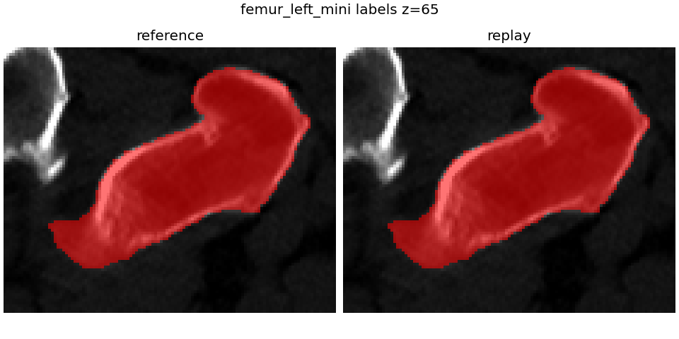
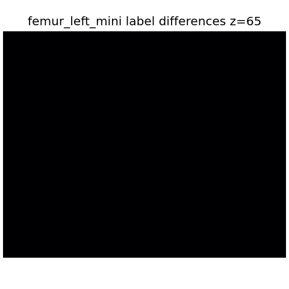

RAS-mm visual comparison report.
Grid shape z/y/x: (119, 95, 119); spacing x/y/z: (0.8183590173721313, 0.8183590173721313, 0.8999999761581421); origin RAS: (75.03208887577057, -46.64635789394379, -429.5000123977661)

